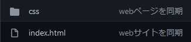
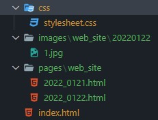

2022年1月22日
今日は，サイト作成2日目ということで新しいページを作成したいと思います．昨日の作業終了時点で，WEBページは次のようなファイル構造をもっていました．
WEBサイトで次のページへ移動するためには，HTMLの＜a＞に次のページへのリンクを設定することでできるみたいです．そこで，今日は次の手順で作業を進めようと思います．
では，今後ページ数と本サイトで扱うプログラミング言語が増えることを見越して，管理しやすいようにファイル構造を整理しようと思います．色々試行錯誤した結果，次のような構成となりました．
これで，画像とそれを載せるサイト本体のHTMLファイルを簡単に見分けることができます．
次に，＜a＞を使って次のページへのリンクを設定します．具体的には，「＜a href＝”〇〇.html”＞次のページへ＜/a＞」と書くみたいです．また，同じ場所に保管されているページをリンク先に指定する場合には，ページのURLではなくファイル名を書き込むようです．さらに，「＜a href＝”〇〇.html” title=”ここに補助情報を書く”＞次のページへ＜/a＞」と書くことで，ユーザがリンク部分にカーソルを合わせたときに補助情報を表示することもできます．これらは，【次のページへ移動するには？】HTMLのリンクがよくわかる解説を参考にさせていただきました．
今日は，簡単に，index.htmlに機能作ったページとこのページのリンクを張り付けて，正常に動作することを確認しました．